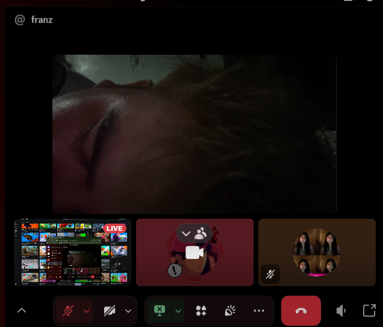
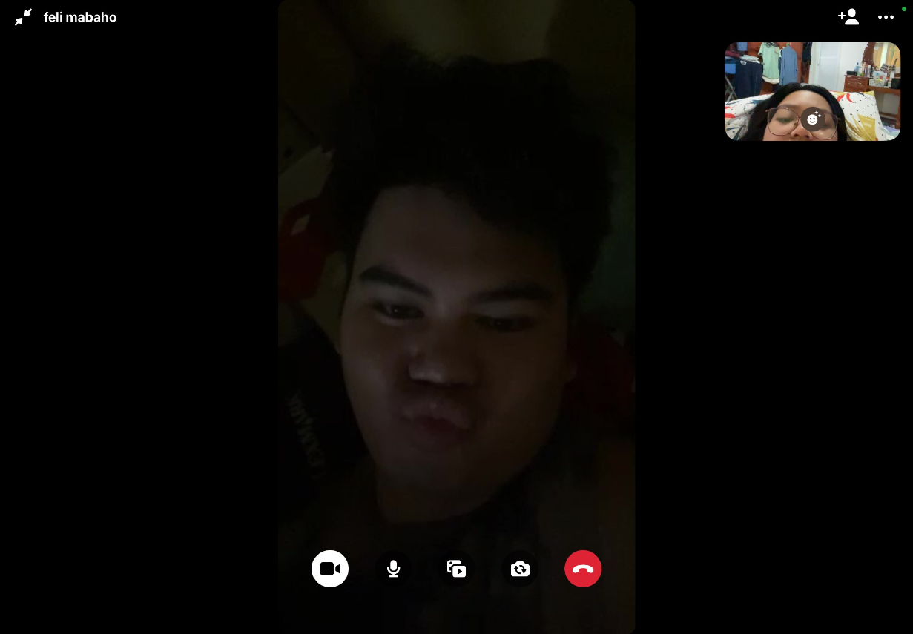
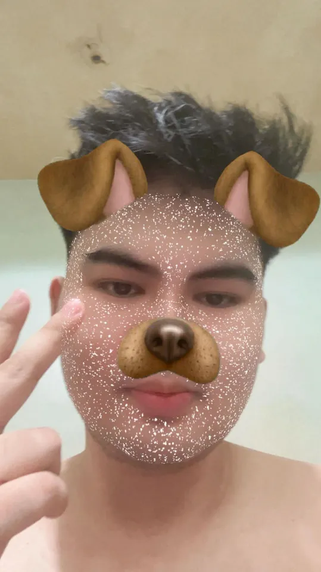

Happy Birthday, Baby
September 21, 2026
Before I start talking about us, I think it's only right that I start by talking about you.
When I first got to know you, I honestly didn't expect that you would become this important to me. At first, I was just getting to know you, learning about your personality and the little things that make you who you are.
But somehow, along the way, you became someone I started looking forward to talking to every day. You became someone I could share my random thoughts with, someone I could laugh with, and someone I could be myself around.
Advanced happy birthday, baby! And happy 7th monthsarry sa atin.
Seven months may not sound like a very long time to some people, but for me, these seven months have meant so much. We've already shared so many memories, conversations, laughs, misunderstandings, and moments that I know I'll always remember. Being in a long-distance relationship isn't always easy. There are days when I wish you were closer and days when I wish we could just spend time together without having to worry about the distance between us.
But despite the distance, you still find ways to make me feel loved and remembered. I appreciate every effort you make, even the little things that you might think aren't important.
I appreciate the time you give me, the conversations we have, and the effort you put into making our relationship work. I know that sometimes things aren't easy, and I know that we both have our own lives and responsibilities, but you still choose to make time for us.
The song playing at the moment reminds me of how you are to me. “Kabisado” by IV of Spades reminds me of how familiar and comforting your presence has become in my life, like someone I know by heart, someone whose little habits and ways have slowly become things I cherish without even realizing it.
Thank you for being patient with me. I know I can be moody sometimes. I overthink a lot, I have random thoughts, and sometimes I probably make things more complicated than they need to be.
Thank you for still trying to understand me even during those moments. Thank you for listening to me and for giving me a chance to explain how I feel.
Our relationship isn't perfect, and I don't think it needs to be. What's important to me is that we're learning how to understand each other better, how to communicate better, and how to grow together.
We've had good days and difficult days, but I'm grateful that we've made it this far. Every conversation, every laugh, every little memory, and even the misunderstandings have become part of our story.
On your birthday, I hope you know how special you are to me. I hope you continue chasing the things that make you happy and become the person you want to be.
I hope this new year of your life brings you more happiness, more opportunities, more reasons to smile, and more moments that you'll be proud of.
I also hope that we get to make many more memories together. I hope we get to celebrate more birthdays, more monthsaries, more milestones, and more little moments that we can look back on someday.
Thank you for being part of my life. Thank you for the memories we've already made and for all the memories that are still waiting for us.
No matter how far apart we are right now, I'm happy that I met you and that we became part of each other's lives.
I love you, baby. Advanced birthday.



always yours
♡